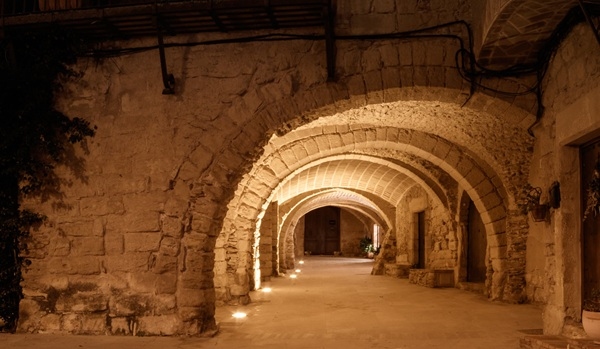

Los pueblos mas bonitos de cataluña
Los pueblos mas bonitos de cataluña

A pocos kilómetros de las mejores calas y playas de la Costa Brava, el pueblo de Peratallada se encuentra situado en la província de Girona a medio camino de Barcelona y también de la frontera francesa.
Peratallada es un bonito pueblo medieval situado en la comarca del Baix Empordà. Es conocido por sus callejones empedrados, sus casas de piedra y su castillo. Su casco antiguo está rodeado de murallas y torres de defensa construidas en el siglo XI para proteger a la población. Sus callejones son el resultado de la historia del pueblo y hacen que caminar por ellos sea una auténtica experiencia. Por todo esto, Peratallada es considerada una de las localidades con más encanto de la zona.